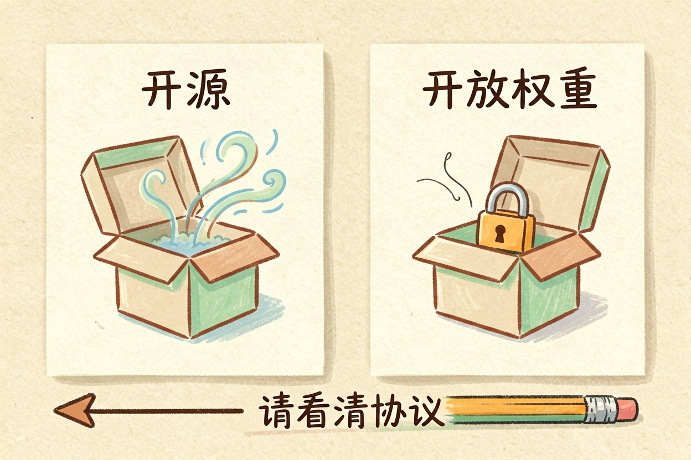
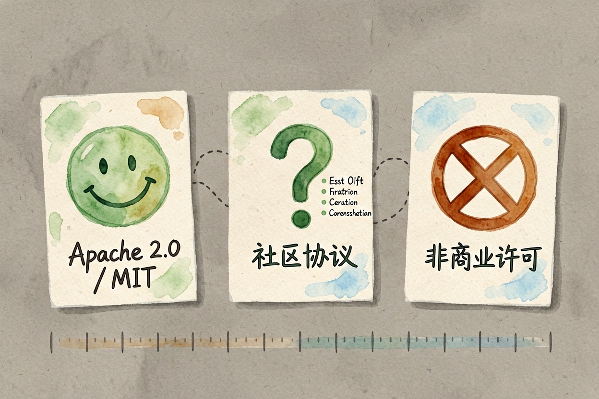
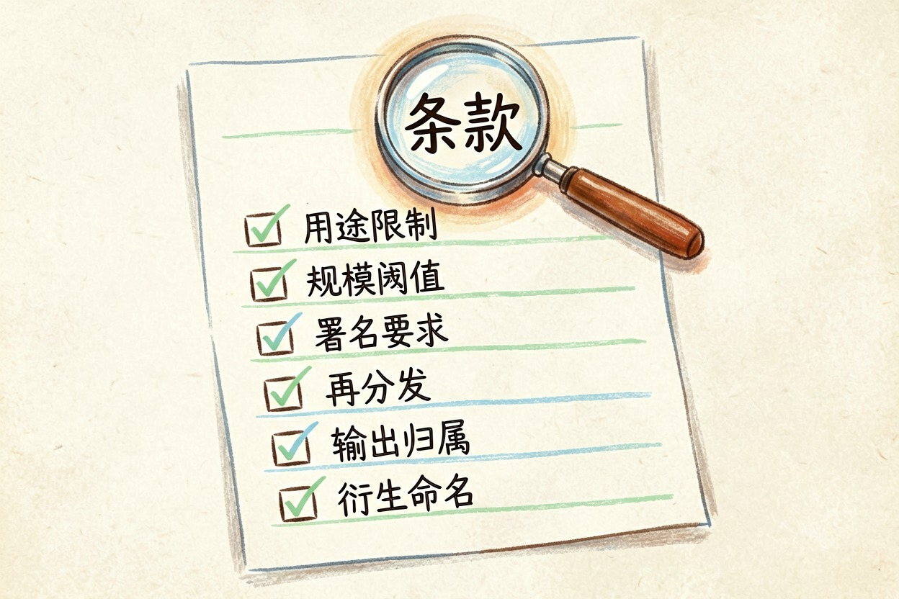
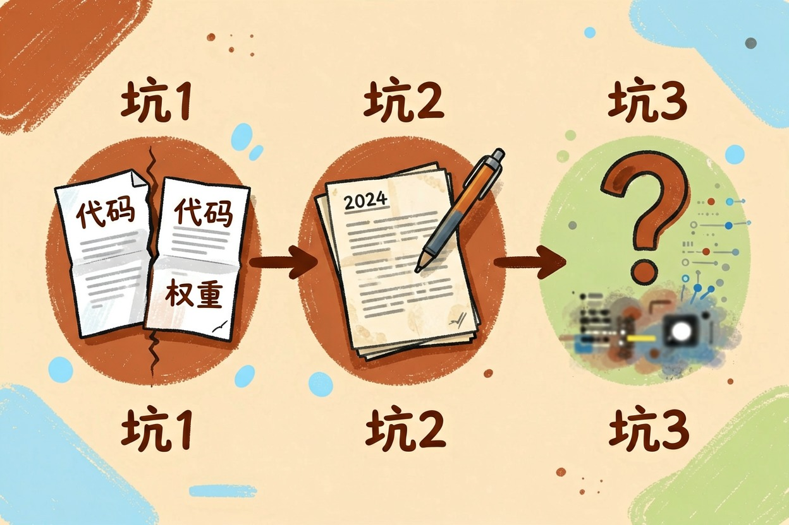

开源模型能商用吗？许可证该怎么看懂 — Learntide
很多模型挂着开源的名字，协议里却写满了限制，看漏其中一行就可能踩雷。
开源模型能商用吗：先分清开源和开放权重

开源模型能商用吗？多数情况可以，但「开源」这两个字在模型圈被用得很松，不能直接等同于随便用。
传统软件的开源有严格定义：任何人可以任意使用、修改、再分发，不限用途。模型这边不一样。很多标着开源的模型，实际只是把权重文件公开下载，附带一份自定义协议，里面写满了条件。业内更准确的叫法是「开放权重」。
所以看到能免费下载，别就当成能商用。协议那一栏才是答案。
常见许可证分哪几档

大致三档，风险由低到高。
最宽松的是 Apache 2.0 和 MIT。商用、修改、闭源二次分发全放行，保留版权声明就行。Apache 2.0 还额外给了专利授权，企业法务通常更认这个。遇到这两种，基本可以放心。
中间一档是厂商自定义的社区协议。允许商用，但附带条件。典型的比如月活超过某个量级要单独申请授权，或者要求在产品里注明模型来源，再或者禁止拿输出去训练竞品。这一档最需要逐条读。
最严的是非商业许可，常见标记是 CC-BY-NC，或者协议里直接写 research only。学术研究随便用，一旦产生商业收益就越界。一些国内模型和早期实验版本走的是这条路。
#集成前先把协议原文拉下来看，别等做完才发现不能用
huggingface-cli download <org>/<model> LICENSE --local-dir ./licchk
head -60 ./licchk/LICENSE
#模型卡的元数据里也常藏着限制条款
curl -s https://huggingface.co/api/models/<org>/<model> \
| python -m json.tool | grep -iE '"license|gated|cardData'商用前要盯死的六行字

拿到协议别通读，直接搜这几处。
用途限制：有没有 non-commercial、research only 这类词。规模阈值：月活或收入到多少要另行申请。署名要求：产品界面或文档里要不要标模型名称。再分发：微调后的权重能不能公开发布，发的时候要不要沿用同一份协议。输出归属：模型生成的内容算谁的，能不能拿去训练别的模型。衍生命名：有些协议要求改出来的模型仍带原厂前缀。
这六条查完，大部分风险就排掉了。
容易踩的三个坑

第一个坑，代码和权重是两份协议。仓库里的推理代码可能是 Apache 2.0，权重却挂着限制性协议。只看根目录那个 LICENSE 会看漏。
第二个坑，协议会变。同一个模型换新版本时改协议是常事，方向通常是收紧。升级前重看一遍，别默认沿用旧结论。
第三个坑，训练数据来源不明。协议只管权重怎么用，管不了数据本身有没有版权瑕疵。真出纠纷，发布方未必替你兜底。
蒸馏这条路也要留神。拿某个闭源模型的输出去训练自己的小模型，不少服务条款是明令禁止的。被查到的后果通常是封号加追责。
别只盯着「开源」两个字
给个实操建议。团队小、只做内部工具，挑宽松协议的模型最省心。要做对外产品，就让法务提前介入，把协议原文存档，记下版本号和下载日期。
条款会随版本变动，上线或掏钱前去模型主页再确认一次最新说明。
真要落地，别在这一步图省事。花半小时搞清开源模型能商用吗，成本远低于产品跑起来之后被叫停。
本文信息核对于 2026-08-08。AI 产品的价格、免费额度与功能变动频繁，实际以各工具官网当前说明为准。